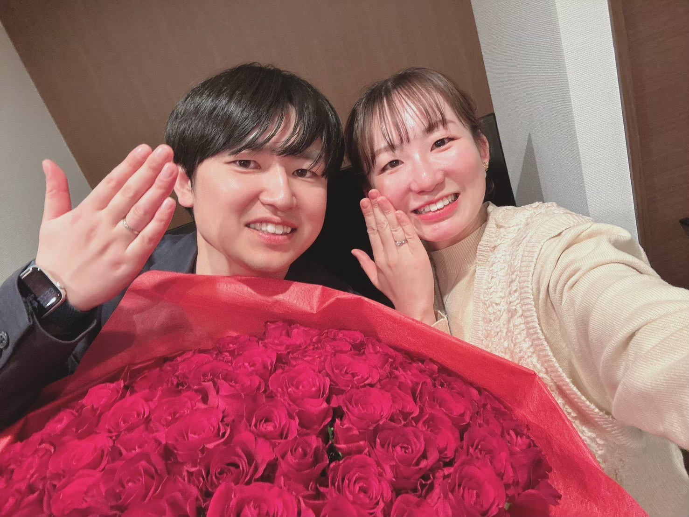

Thank You
私たちの結婚式にお越しいただき、本当にありがとうございました。
皆様と過ごした大切な一日を、これからもずっと心に刻んで。
これからも、私たちふたりをどうぞよろしくお願いいたします。
あなたは、The Last Puzzle を番目に解き明かしました！
Yusuke & Aika

私たちの結婚式にお越しいただき、本当にありがとうございました。
皆様と過ごした大切な一日を、これからもずっと心に刻んで。
これからも、私たちふたりをどうぞよろしくお願いいたします。
あなたは、The Last Puzzle を番目に解き明かしました！